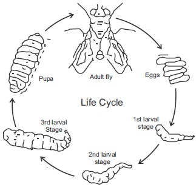

Infectious diseases which are caused by pathogenic micro organisms greatly
contribute to the poor health of people. For achieving and sustaining good health,
efforts should be put foward in controlling disease causing (pathogenic) micro
organisms, their animal vectors, and promoting the science of hygiene.
Control of pathogenic micro organisms
Some common methods of controlling the spread of disease causing micro
organisms are:
Sterilization using high temperature and chemicals like chlorine.
Use of antiseptics and disinfectants.
High salinity.
Use of antibiotics.
Dehydration.
Vectors and their control
Vectors are animals that carry and transmit disease-causing micro organisms.
Insects and rodents are the most common vectors.
To control vectors, knowledge of their habits and life cycles are necessary. With
such knowledge, environmental, biological and chemical methods can be used to
control a given vector.
Personal health
Personal health involves the act of observing personal hygiene habits. With such
habit we can control the spread of infectious disease.
Apart from personal hygiene, eating balanced diet, doing regular exercise,
physical and mental rest: doing work suited for ones mental and physical
ability and avoiding harmful habits like smoking and drinking are other ways of
maintaning good health.
Public health
Maintaining the health of the people in a country (members of the public) is the
responsibility of the individual, the community, the government and health
organization in rural areas. The communities coupled with individual efforts play a
vital role in the maintenance of public health in urban areas. Apart from individual
contributions, the government is responsible for public health.
Maintenance of public health involves:
Refuse and sewage disposal.
Protection of water supplies and provision of clean water.
Effective disease control.
Personal hygiene.
Health organizations.
Micro organisms and health General questions
1. The process of heating any mixture or solution to high temperature in order to kill the micro organisms in it is called
2. Chemicals that kill or inhibit the growth of pathogen can be
or
3.
is the optimal temperature for the growth of micro organisms.
4. Write one example of an instrument used for sterilizing heat stable materials in hospitals and laboratories.
5.
is an example of a rodent vector.
6. The inactivated form of a toxin produced by disease causing micro organisms is called
7.
is the most acceptable refuse disposal method.
8. State one important precaution that must be taken while digging a pit toilet.
9. Water from bore holes can be made fit for drinking after
10. The three main divisions under the ministry of health responsible for the control of disease in this country are
Write down four voluntary health organizations
15. The most acceptable method of sewage disposal is the
system.
Expression exercise
1a Write five important cleanliness habits food handlers should observe.
(b) Write two main responsibilities of the sanitary division, of the ministry of health in the control of diseases.
2a Write five main functions of world health organization (WHO)
2b State two importance of personal hygiene in the control of diseases.
3. List how the following vectors or disease vectors can be controlled.
(a) Mosquito
(b) Tsetse fly.
(c) House fly.
Practical activities
Controlling the growth of microorganisms: materials provided are: covered petridishes containing a sterile culture medium. The class
can work in groups of A, B, C, D, and E
Procedure
Label each of the petri dishes using A1, B1, C1, D1, E1,
Transfer known microorganism from an established culture to different points on the petridishes with the dish labelled A2 B2 C2 D2 and
E2 to serve as control.
0 0
Group A students should place culture A1 in an oven regulated to a temperature of 150 C or place the culture into a refrigerator at O c.
The group should use culture A2 as control by leaving it on the table.
Group B students should apply one or two tablets of penicillin on marked portions of B1 and just keep it beside the B2 culture which
serves as a control.
Group C students should add dettol an antiseptic on the culture C1 surface, use the dettol to cover that spot and let C2 which serves
as control be left by its side.
Group D students should put culture D1 in a desiccator and use D2 as control on the table.
Group E students should pipette some drops of strong salt water on E1 and mark the extent covered by the drops. Then place it by the
side of E2 which serves as control.
After setting up the experiment, leave it for two days. Observe it daily for five days, record your observation and tabulate your result
as below:
Daily observation after two days
Conditions
1st day
2nd day
3rd day
4th day
5th day
High or low A1
temperature A2
Penicillin B1
Applied B2
Dettol C1
added C2
Placedina D1
Desiccator D2
High salty E1
condition E2
1a From your observations, what cultures did you notice growth of micro organisms
(b) What conclusions can you draw from your observation
fig15.4:

2a. The diagram above is the life cycle of a house fly, state how this knowledge can be used to control this disease
carrying vector
2b. Use an arrow head to indicate which stage comes after the other in the cycle.